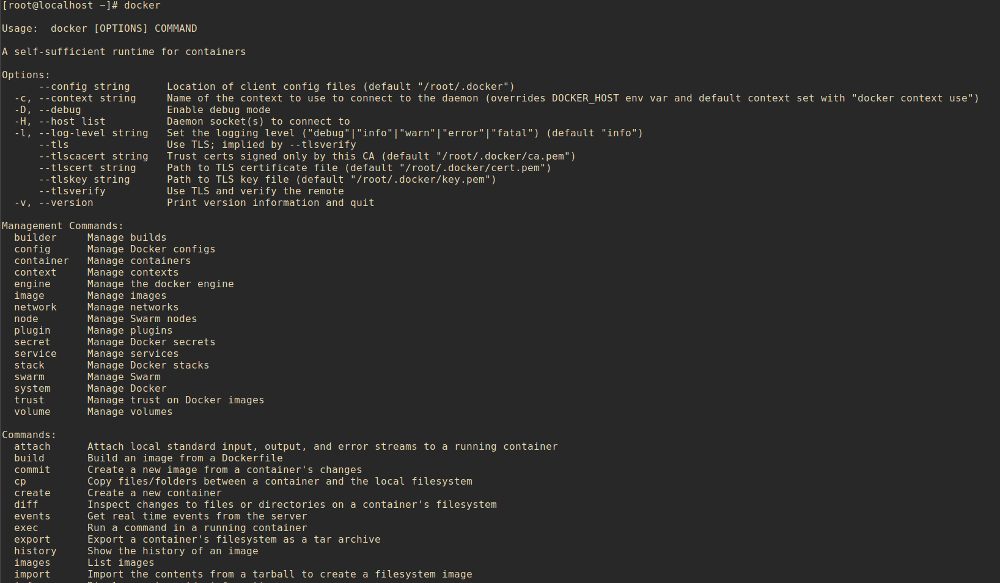
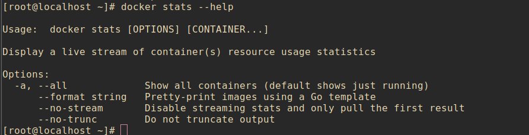

docker 客户端非常简单 ,我们可以直接输入 docker 命令来查看到 Docker 客户端的所有命令选项。
docker安装
1 | curl -fsSL https://get.docker.com | bash -s docker --mirror Aliyun |
Docker Compose的安装
Compose的安装有多种方式，例如通过shell安装、通过pip安装、以及将compose作为容器安装等等。本文讲解通过shell安装的方式。其他安装方式如有兴趣，可以查看Docker的官方文档：https://docs.docker.com/compose/install/
1 | docker compose安装步骤 |
docker服务器重启
1 | service docker restart |
docker

可以通过命令 docker command —help 更深入的了解指定的 Docker 命令使用方法。
例如我们要查看 docker stats 指令的具体使用方法：
1 | docker stats --help |

搜索镜像
官网查看镜像版本地址
https://hub.docker.com/
1 | docker search httpd |
获取镜像
1 | docker pull xxxx |
新建并启动容器
1 | docker run |
启动容器（已创建的）
1 | docker start <CONTAINER ID> |
查看启动容器
1 | docker ps |
查看所有容器
1 | docker ps -a |
停止容器
1 | docker stop <容器 ID> |
重启容器
1 | docker restart <容器 ID> |
进入容器
在使用 -d 参数时，容器启动后会进入后台。此时想要进入容器，可以通过以下指令进入：
- docker attach
- docker exec：推荐大家使用 docker exec 命令，因为此退出容器终端，不会导致容器的停止。
attach 命令
下面演示了使用 docker attach 命令。
1 | $ docker attach 1e560fca3906 |

注意： 如果从这个容器退出，会导致容器的停止。
exec 命令
下面演示了使用 docker exec 命令。
1 | docker exec -it 243c32535da7 /bin/bash |
注意： 如果从这个容器退出，容器不会停止，这就是为什么推荐大家使用 docker exec 的原因。
更多参数说明请使用 docker exec —help 命令查看。
获得容器root权限
第一步：查看容器的CONTAINER ID
1 | docker ps |
ps:需要运行中的容器
第二步：获取root权限，例如需要进入的CONTAINER ID为2209371edd48
1 | docker exec -ti -u root 2209371edd48 bash |
导出和导入容器
导出容器
如果要导出本地某个容器，可以使用 docker export 命令。
1 | docker export 1e560fca3906 > ubuntu.tar |
导出容器 1e560fca3906 快照到本地文件 ubuntu.tar。

这样将导出容器快照到本地文件。
导入容器快照
可以使用 docker import 从容器快照文件中再导入为镜像，以下实例将快照文件 ubuntu.tar 导入到镜像 test/ubuntu:v1:
1 | cat docker/ubuntu.tar | docker import - test/ubuntu:v1 |
此外，也可以通过指定 URL 或者某个目录来导入，例如：
1 | docker import http://example.com/exampleimage.tgz example/imagerepo |
删除容器
删除容器使用 docker rm 命令：
1 | docker rm -f 1e560fca3906 |

下面的命令可以清理掉所有处于终止状态的容器。
1 | docker container prune |
设置容器自动启动
1 | 在运行docker容器时可以加如下参数来保证每次docker服务重启后容器也自动重启： |
Docker cp 命令
docker cp :用于容器与主机之间的数据拷贝。
语法
1 | docker cp [OPTIONS] CONTAINER:SRC_PATH DEST_PATH|- |
OPTIONS说明：
- -L :保持源目标中的链接
实例
将主机/www/runoob目录拷贝到容器96f7f14e99ab的/www目录下。1
docker cp /www/runoob 96f7f14e99ab:/www/
将主机/www/runoob目录拷贝到容器96f7f14e99ab中，目录重命名为www。1
docker cp /www/runoob 96f7f14e99ab:/www
将容器96f7f14e99ab的/www目录拷贝到主机的/tmp目录中。
1 | docker cp 96f7f14e99ab:/www /tmp/ |
附录
菜鸟教程-docker https://www.runoob.com/docker/docker-tutorial.html

...
...
Copyright 2021 sunfy.top ALL Rights Reserved